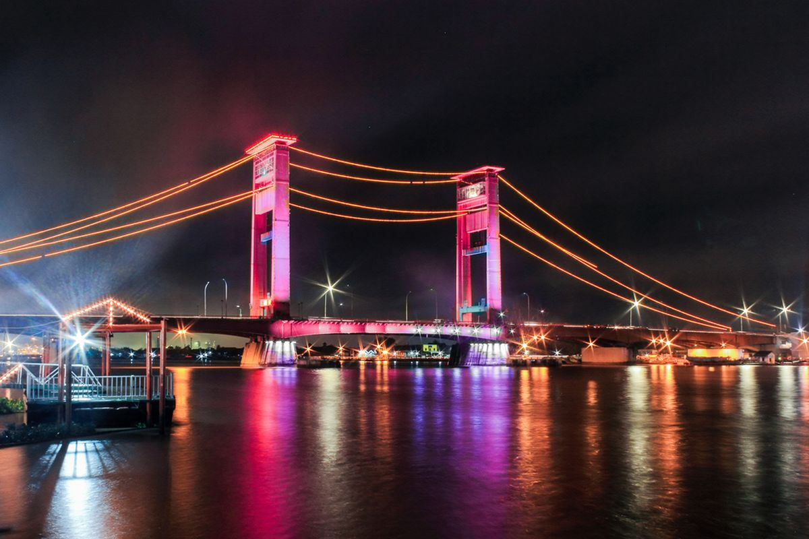

Menyajikan ragam keelokan arsitektur bersejarah, pesona alam pulau delta di perairan Sungai Musi,
hingga cagar budaya religius yang memancarkan harmoni akulturasi lintas bangsa.
Kota Palembang menawarkan daya tarik wisata yang terkonsentrasi di sekitar aliran Sungai Musi.
Wisatawan dapat menikmati pemandangan jembatan megah dari pelataran benteng bersejarah,
mengagumi keunikan arsitektur masjid kuno beratap kelenteng, hingga berlayar santai menggunakan perahu motor menuju delta pulau di tengah sungai.
Berikut adalah destinasi ikonik yang menjadi magnet utama wisatawan domestik maupun mancanegara.
📍
Empat Destinasi Ikonik Paling Populer

Ikon Kota
Jembatan Ampera & Sungai Musi
Jembatan gantung berwarna merah menyala dengan panjang 1.177 meter yang membentang di atas Sungai Musi.
Diresmikan pada tahun 1965, jembatan ini menghubungkan kawasan Seberang Ulu dan Seberang Ilir.
Saat petang hingga malam hari, gemerlap lampu sorot artistik terpantul di atas riak air sungai, menciptakan panorama yang memesona bagi para fotografer dan pelancong.
Pemandangan matahari terbenam (sunset) terbaik di Palembang
Tersedia perahu wisata ketek untuk menyusuri kolong jembatan
Akses langsung dari Stasiun LRT Ampera
Wisata Religi
Masjid Agung Sultan Mahmud Badaruddin I
Masjid bersejarah peninggalan era keemasan Kesultanan Palembang yang mulai didirikan pada tahun 1738 oleh Sultan Mahmud Badaruddin I Joyo Wikramo.
Arsitekturnya memperlihatkan perpaduan langka antara corak tradisional Nusantara, atap tumpang menjulang ala pagoda Tionghoa,
dan pilar-pilar kokoh bergaya neoklasik Eropa yang mencerminkan keterbukaan budaya masyarakat Palembang.
Ditetapkan sebagai Bangunan Cagar Budaya Nasional
Menara masjid anggun dengan ornamen ukiran khas Melayu
Kapasitas jamaah hingga belasan ribu orang
Wisata Budaya
Pulau Kemaro & Pagoda 9 Lantai
Sebuah delta alami yang terletak di tengah aliran Sungai Musi, sekitar 6 kilometer ke arah hilir dari Jembatan Ampera.
Pulau ini terkenal dengan Pagoda megah berlantai sembilan, Kelenteng Hok Tjing Rio, serta makam yang dikaitkan dengan legenda cinta abadi
antara Pangeran Tan Bun An asal Tiongkok dan Putri Siti Fatimah asal Palembang. Pulau ini menjadi pusat perayaan Cap Go Meh tahunan yang sangat semarak.
Pagoda sembilan tingkat bergaya arsitektur oriental klasik
Mitos 'Pohon Cinta' yang dipercaya membawa kelanggengan jodoh
Dapat dicapai dengan perahu motor ketek dari dermaga BKB
Warisan Keraton Militer Abad ke-18
Benteng Kuto Besak (BKB) & Pelataran Iwak Belido
Kawasan terbuka publik di depan dinding pertahanan bersejarah Benteng Kuto Besak.
Benteng Kuto Besak (BKB) merupakan bangunan keraton berbenteng batu peninggalan Kesultanan Palembang Darussalam yang berdiri gagah menghadap Sungai Musi.
Pembangunannya memakan waktu sekitar 17 tahun dan diresmikan penggunaannya pada tahun 1797.
Berbeda dengan benteng-benteng peninggalan VOC atau Hindia Belanda di wilayah Nusantara lainnya,
BKB adalah karya arsitektur pertahanan mandiri yang dirancang dan dibangun sepenuhnya oleh kesultanan pribumi.
Kini, pelataran di depan benteng telah disulap menjadi ruang publik terpadu yang sangat hidup.
Di sini berdiri Tugu Iwak Belido setinggi 12 meter dari perunggu yang menyemprotkan air ke Sungai Musi menyerupai Patung Merlion di Singapura.
Kawasan ini menjadi titik berkumpul favorit masyarakat untuk bersantai, menikmati wisata kuliner malam terapung di atas perahu getek,
maupun menyaksikan perahu-perahu tradisional melintas di bawah kolong Ampera.